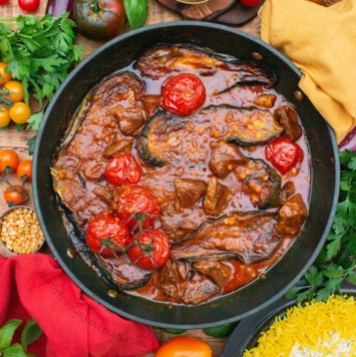

Gheymeh Bademjoon
INGREDIENTS
- 500g lamb leg or shoulder (about 1 lbs)
- 2 large aubergines / eggplants
- 12 cherry vine tomatoes
- 1 onion
- 3 cloves garlic
- 100g yellow split peas (measured dry) (3/8 cup)
- 500ml water or more (2 cups)
- 1 egg
- 100ml vegetable oil (1/4 cup)
- 4 tbsp tomato puree
- 2 tsp turmeric
- 1 tsp black pepper
- 1 tbsp salt + extra to taste

INSTRUCTIONS
- Cut the aubergines lengthwise in three slices (in halves if you’re using small aubergines). Generously salt the aubergine slices and let them sit for 15 minutes. This will bring out some of the moisture, which will reduce the amount of oil they absorb when frying them.
- Cut the meat into 2.5cm / 1 inch small cubes. Select a pan that is large enough to fry the meat and also has a lid. Sauté the lamb pieces over medium to high temperature in 3 tbsp hot vegetable oil until golden brown brown on each side. Remove the meat from the pan.
- Finely chop the onion and garlic. Gently sauté the onions over low to medium heat in the same oil you fried the meat in. After about 5 minutes add the garlic and sauté them together for a few more minutes.
- Return the meat to the pan. Add the tomato paste, onion, garlic, turmeric, black pepper, and salt to taste.
- Add 2 cups of freshly boiled water to the pan, put on the lid and let the stew simmer for 1 hour over low to medium heat.
- Cook the split peas in boiling water. The cooking time varies from brand to brand. Some brands need 20 minutes, others up to 45 minutes like the ones from Anjoman, that I recently used. You might wanna try them after 15 minutes every so often until they are just cooked or al dente. Once cooked, drain the water, rinse them with cool water and set them aside until it’s time to add them to the stew.
- Rinse the aubergine slices with water and dry them with a paper towel or clean kitchen towel. Divide the egg into yolk and white. You only need the egg white. Brush the aubergine slices from the cut sides with egg white. This prevents them further from absorbing too much oil. This litte hack really makes a big difference.
- Heat the remaining vegetable oil in a frying pan and fry the aubergines in it until golden brown.
- After 1 h of letting the stew simmer, add more hot water, if necessary. Then add the fried aubergine slices to it and make sure they are fully submerged in the stew. Lay the tomatoes on top and put on the lid. Let the stew simmer for a further 30 min over low to medium heat.
- After about 15 min add the split peas to the stew and let everything simmer together.
- Prepare some delicious saffron rice with it.
- Serve the Khoresh Gheymeh Bademjan with aromatic rice and creamy yogurt. Enjoy!